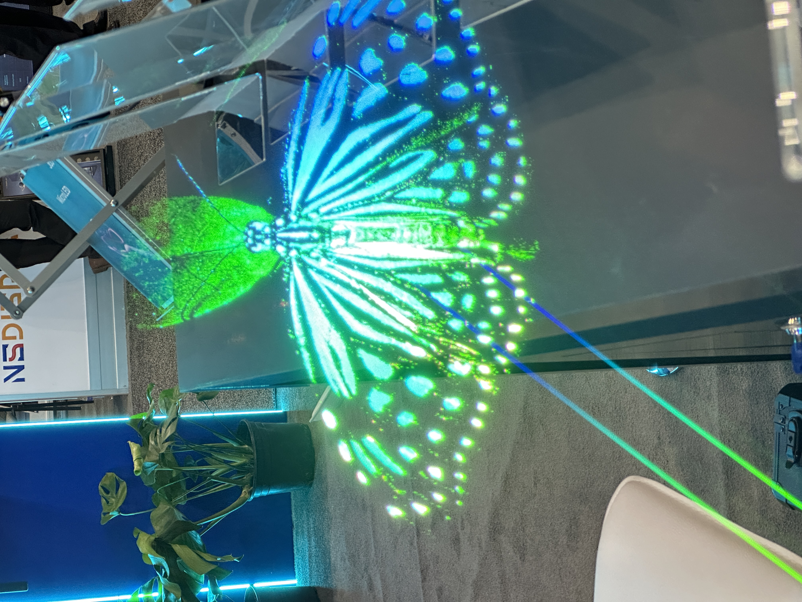

Kristaps Moruss

Industry experienced information display process development engineer and project leader. With
more than 9 years of experience in working with variety of display technology projects in Europe, US and
Asia. Broad experience working at high volume production plants in Asia and high technology labs in
Silicon Valley.
Experience
01/2022 - ONGOING
Senior NPI engineer / DigiLens, Sunnyvale, CA
As Senior NPI at Digilens I manage optical measurement lab, which includes sourcing product and
application specific metrology instruments, keeping hardware and software up to date.
Long list of daily tasks include:
- Design and build hardware test platforms to characterize AR/MR system level and module
performance
- Work closely with optical engineers to develop software for interfacing with hardware, data
acquisition, data analysis and automation using Python (Most familiar with Numpy, Pandas,
OpenCV, pyodbc, Scikit learn, Scipy, Seaborn, Matplotlib, Plotly, Bokeh, beginner with TensorFlow),
LabVIEW, SQL, HTML
- Develop custom display metrology and machine vision algorithms and software for manufacturing
(high volume) and R&D product characterization and defect quantification.
- Setup manufacturing metrology instruments and provide training at licensing companies and
provide hardware and software support.
01/2020 - 01/2022
NPI Engineer / DigiLens, Sunnyvale, CA
Advanced technology company enabling augmented reality technology developing optical waveguide
displays by holographically printing diffractive gratings
- Develop and implement optical measurement systems and algorithms according to industry standards
- Develop and maintain computer vision and pattern recognition measurement applications
- Data analysis algorithm development, complete data extraction, database maintenance, analysis and
presentation to solve problems and improve product quality and manufacturing process
- Maintain product and image quality measurement system technical documentation
- • Optical waveguide manufacturing and characterization instrument and methodology implementation
at customer site
- Field failure analysis and solution evaluation for production product issues on customer site
01/2016 - 12/2019
Display process engineer / CLEARink Displays, Fremont, CA
Innovative electrophoretic display company developing reflective low power color & video TIR e-Paper
display technology
- Manage and own display & module architecture design and technical documentation
- Developed and implemented lab and pilot scale display manufacturing process at Gen 2.5 plant in Asia
and Fremont lab
- Managed supply chain (I believe have good size professional network in displays in Aisa), design and lead prototype trial manufacturing in factories in China, Japan and Taiwan
- Trial manufacturing includes TFT substrate, CFA, optical microstructure manufacturing, thin film coatings, photolithography structures, panel assembly, module assembly, El./Op. testing
- Analyze pilot trial manufacturing results, perform failure mode and effects analysis, calculate RPN, improve DOE and production yield
- Led 3D nano-fabrication process from mastering to large volume manufacturing
04/2012 – 10/2015
Display application engineer / EuroLCDS, Ventspils, Latvia
New LCD product development company with its own research, industrialization and manufacturing facilities in Europe
- Was part of a team that assembled, qualified and upgraded LCD manufacturing line with ps laser ablation & ODF panel assembly technologies making it much more efficient and environmentally friendly production line
- Led passive matrix welding mask (3M), 3D volumetric (Lightspace Technologies) & bistable privacy LCD display (Dow Corning) projects
Skills & Knowledge
Industry related skills:
- Thin film coatings
- Standards
- Photolithography
- Process control
- Display Materials
- Statistics
- FMEA
- Human Vision system
Familiar with technologies:
- Micro LED
- Optics
- 3D printing
- 3D Interferometry
- Microscopy
- SEM/FIB/AFM
- Display interface
- Touch technologies
- Vacuum systems
Computer skills:
- AutoCAD
- Solidworks
- Minitab/ JMP
- LabView
- Python
- C, C#, SQL
- PLM software
- Photometrica
- Solidworks Composer
Education
06/2015
M.S. in Electrical Engineering / Ventspils University of Applied Sciences, Latvia
- M.S. thesis: Development of Fully programmable high voltage test signal generator
- Relevant courses: RF and Microwave systems, Automatic control systems, Scientific research methodology, Engineering applications using LabView,Project administration and Innovation management, Data conversion techniques and circuits
06/2011
B.S. in Electrical Engineering / Ventspils University of Applied Sciences, Latvia
- B.S. thesis: Development of touch screen with serial interface
- Relevant courses: Probability and Mathematical statistics, Semiconductor electronics, Microcontrollers and Embedded systems, Mathematical analysis, Wireless technologies, Digital signal processing, Optics and Optoelectronics, Material chemistry and nanotechnologies, Applied optics
Patent applications
- Process for manufacture of a TIR-based reflective image display, 2019
- Programmable high voltage display test signal generator for bi-stable display systems, 2015
Awards
CLEARink Displays product won SID Display week "Best in Show" awards in 2017 & 2019
Additional education
- Stanford University Continuing studies: Project Management: An Introductory Hands, Grade: A+
Philanthropy
In June of 2019 I founded my own scholarship fund to help diligent, talented students from low income families to study in universities of Latvia and provide career development support and mentorship.
Other